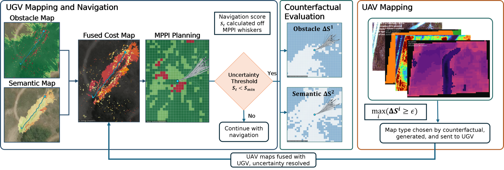

Abstract
ABSTRACT_TEXT
Method

METHOD_DESCRIPTION
Results

Result 1 caption.

Result 2 caption.

Result 3 caption.
Video
BibTeX
@inproceedings{CITE_KEY2026,
title = {Uncertainty-Triggered Aerial Refinement},
author = {Anonymous Authors},
booktitle = {Conference Name},
year = {2026},
url = {https://artificial-agent.github.io/uncertainty-triggered-aerial-refinement/}
}